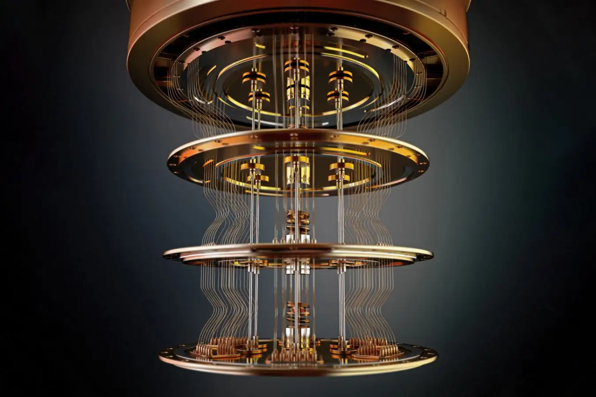
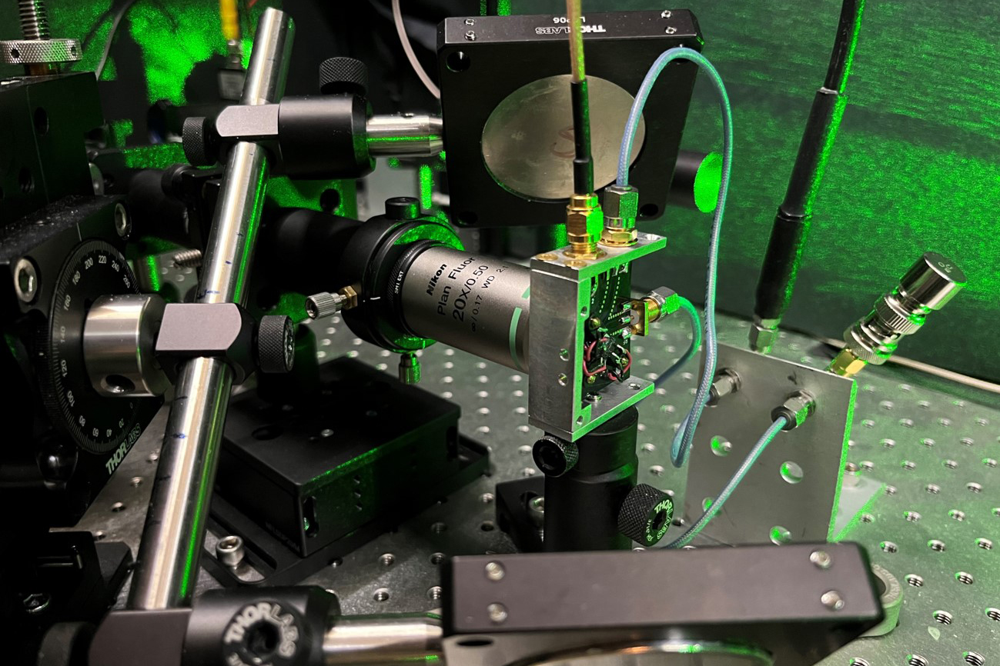

Quantum dots are nanoscale semiconductor particles whose optical properties depend on size.
They are widely used in displays and biomedical imaging.
Their ability to emit specific colors makes them useful in high-quality screens and medical diagnostics.

Quantum computers use qubits and superposition to perform parallel computations,
solving problems that classical computers cannot.
They are used in cryptography, optimization, and simulation of complex quantum systems.
Scanning tunneling microscopy (STM) uses quantum tunneling to observe and manipulate atoms.
IBM scientists demonstrated this by arranging atoms precisely.
This enables atomic-scale imaging and is crucial in nanotechnology and surface physics.
Quantum key distribution ensures secure communication.
Any interception attempt can be detected instantly.
It relies on quantum principles, making it fundamentally secure against hacking.

Quantum sensors provide extremely precise measurements of physical quantities.
They are used in navigation, medical imaging, and detecting tiny environmental changes.
Quantum simulation helps model complex molecules and materials.
It accelerates discoveries in chemistry, physics, and material science.